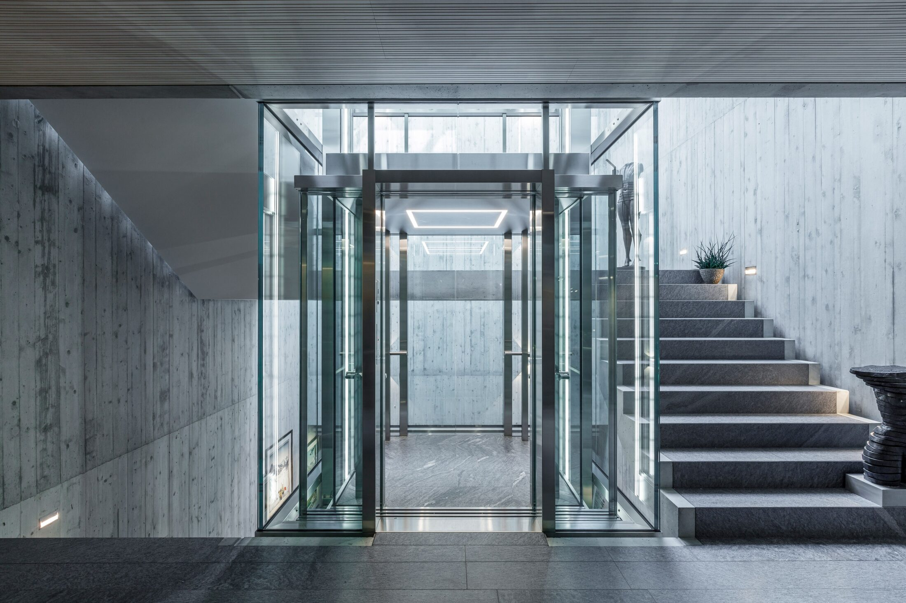

LÜTHI Aufzüge
Aufzüge nach Mass.
Konstruiert für Gebäude, Nutzung und konkrete Anforderungen.
Projekt besprechenScroll — Annäherung·Klick — Aufzugsaktion
LÜTHI
LÜTHI Prinzip
Nicht aus dem Katalog.
Die Aufgabe bestimmt den Aufzug.
Einbausituation, Nutzung und Anforderungen bilden den Ausgangspunkt der Konstruktion.
AnforderungKonstruktionLösung
Bandbreite
Menschen.
Waren.
Fahrzeuge.
Vom Personenaufzug bis zur industriellen Transport- und Sonderanlage.
PersonenLastenFahrzeugeSpezial
Konstruktion
Wenn Standard
nicht passt.
Eigene Konstruktion schafft Spielraum für Abmessungen, Türsysteme und besondere technische Anforderungen.
AbmessungTürsystemTechnik
Eigenfertigung
Wer selbst baut,
kann anders lösen.
Eigene Konstruktion und ein hoher Eigenproduktionsanteil schaffen Spielraum für Lösungen ausserhalb des Standards.
KonstruktionEigenproduktionOberaargau
Gespräch vereinbaren
00 Initial — Lift offen